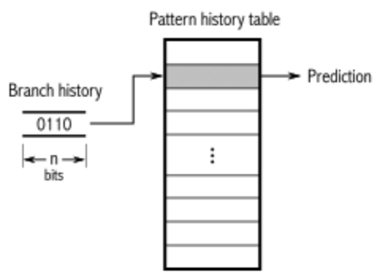

Meltdown & Spectre
Exploiting Out-Of-Order/Speculative Execution in Modern CPU
Liwei GuoXSEL
CPU u-Architecture

Speculative Execution
Exemplified in branch prediction, which usually keeps a table of taken/not taken mapping.
So what?
- Even though OOO and speculative execution happen all the time, the instructions will only be committed and take effect IFF conditions evalutate to TRUE.
- A triggered exception or a mis-predicted branch will cause the pipeline to be flushed and mis-executed instructions (we call them transient instructions) to be reverted.
- Therefore, we need a covert channel to transmit the information out!
Side-channel Attack
- A very common attack vector. It utilizes "side-channel" info, which usually reflects running status of the victim.
- Power side channel: power traces leak what is going on with your device.
- Cache side channel: (i.e., timing side channel) time difference between a cache hit/miss is so significant that running status can be captured by measuring such time difference.
Meltdown
in one sentence
Meltdown is an attack that exploits OOO execution of modern CPU and utilizes cache side-channel to transmit information.
-
Fork and Execute: child process will be terminated while parent process survies!
-
Signal Handler: handle the exception so that it won't terminate by default.
-
Suppressing Exception: utilize transactional memory (thanks to Intel), a feature that allows to combine multiple memory accesses and roll-back if an error occurs.
DEMO TIME!
Spectre
in one sentence
Spectre is an attack that exploits speculative execution of modern CPU and utilizes cache side-channel to transmit information.
DEMO TIME!
Pretty Code
function linkify( selector ) {
if( supports3DTransforms ) {
var nodes = document.querySelectorAll( selector );
for( var i = 0, len = nodes.length; i < len; i++ ) {
var node = nodes[i];
if( !node.className ) {
node.className += ' roll';
}
}
}
}
Code syntax highlighting courtesy of highlight.js.
Clever Quotes
These guys come in two forms, inline: The nice thing about standards is that there are so many to choose from
and block:
“For years there has been a theory that millions of monkeys typing at random on millions of typewriters would reproduce the entire works of Shakespeare. The Internet has proven this theory to be untrue.”
Intergalactic Interconnections
You can link between slides internally, like this.
Speaker View
There's a speaker view. It includes a timer, preview of the upcoming slide as well as your speaker notes.
Press the S key to try it out.
Export to PDF
Presentations can be exported to PDF, here's an example:
Global State
Set data-state="something" on a slide and "something"
will be added as a class to the document element when the slide is open. This lets you
apply broader style changes, like switching the page background.
State Events
Additionally custom events can be triggered on a per slide basis by binding to the data-state name.
Reveal.addEventListener( 'customevent', function() {
console.log( '"customevent" has fired' );
} );
Take a Moment
Press B or . on your keyboard to pause the presentation. This is helpful when you're on stage and want to take distracting slides off the screen.
Much more
- Right-to-left support
- Extensive JavaScript API
- Auto-progression
- Parallax backgrounds
- Custom keyboard bindings